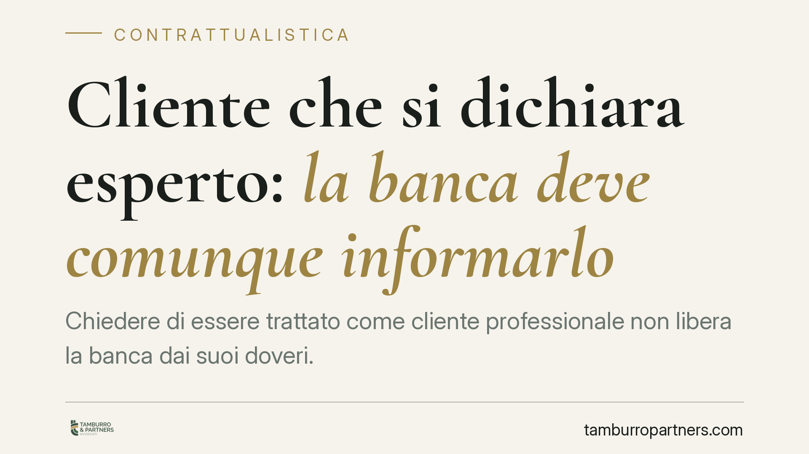

Cliente che si dichiara "esperto": la banca deve comunque informarlo
Chiedere di essere trattato come cliente "professionale" non libera la banca dai suoi doveri. Secondo un orientamento della Cassazione, quella richiesta è una valutazione, non una confessione: l'intermediario deve comunque verificare i requisiti con i dati che possiede e rispettare gli obblighi informativi sul rischio. Un principio che incide direttamente sul riparto dell'onere della prova nelle controversie finanziarie.

Il principio
Un risparmiatore chiede alla banca di essere qualificato come cliente professionale. La richiesta amplia le operazioni accessibili, ma riduce le tutele previste per il cliente al dettaglio. Quando l'investimento va male, la banca può difendersi sostenendo che il cliente stesso si era dichiarato esperto?
La Cassazione, in una recente pronuncia in materia di intermediazione finanziaria, ha escluso che quella dichiarazione abbia natura di confessione. Per la Corte si tratta di un giudizio di valore – una stima soggettiva sulla propria competenza – e non dell'ammissione di un fatto storico sfavorevole. La distinzione non è teorica: cambia chi deve provare cosa.
Confessione o giudizio di valore
La confessione, disciplinata dall'art. 2730 c.c., è la dichiarazione con cui una parte riconosce la verità di fatti a sé sfavorevoli e favorevoli all'altra. Ha un'efficacia probatoria forte: fa piena prova contro chi la rende.
Affermare "sono un investitore esperto" non riconosce un fatto, ma esprime una valutazione sulle proprie capacità. Per questo non può valere come confessione e non vincola il giudice. La banca, di conseguenza, non può trincerarsi dietro l'autoqualificazione del cliente per ritenersi esonerata dai propri obblighi.
Il quadro normativo
La categoria del cliente professionale trova fondamento nel Testo Unico della Finanza (D.Lgs. n. 58/1998, TUF) e, sul piano attuativo, nel Regolamento Intermediari Consob n. 20307/2018, Allegato 3, che ha recepito la disciplina MiFID II sostituendo il precedente Regolamento n. 16190/2007. Per le operazioni compiute prima dell'entrata in vigore del regime attuale resta applicabile, *ratione temporis*, la disciplina previgente: occorre quindi sempre individuare quale normativa fosse in vigore al momento dei fatti.
La disciplina distingue due figure. Il cliente professionale di diritto (ad esempio banche, SIM, grandi imprese che superano determinate soglie dimensionali) è tale per legge. Il cliente professionale su richiesta è invece il privato che chiede di rinunciare a parte delle tutele: in questo caso l'intermediario deve verificare, in base a criteri predefiniti, la sussistenza dei requisiti di esperienza, conoscenza e competenza. La semplice domanda del cliente non basta.
La pronuncia non elimina la categoria del cliente professionale, né la rende inutile. Chiarisce, piuttosto, che la richiesta del cliente non sostituisce la verifica sostanziale che compete alla banca.
Cosa cambia sul piano probatorio
Il punto pratico è il peso della prova. Se la dichiarazione non è confessione, il cliente che contesta un investimento non deve superare lo scoglio di un'ammissione vincolante. Resta fermo il principio, consolidato in materia, per cui spetta all'intermediario provare di aver adempiuto correttamente agli obblighi informativi e di adeguatezza.
La banca deve quindi dimostrare di aver verificato i requisiti anche con le informazioni già in suo possesso – storico operativo, patrimonio, profilo di rischio – e di aver fornito le informazioni sul rischio dell'operazione. Non può limitarsi a esibire il modulo con cui il cliente si è autoqualificato.
Implicazioni per il risparmiatore
Chi ha chiesto il trattamento professionale non perde automaticamente ogni tutela. In caso di contestazione, l'autoqualificazione non chiude la partita a favore della banca. Allo stesso tempo, il cliente professionale su richiesta assume consapevolmente un livello di protezione ridotto: la scelta va ponderata.
Cosa fare in concreto
- Conserva ogni documento firmato in fase di classificazione come cliente professionale e la documentazione informativa ricevuta.
- Verifica se ti è stata chiesta la prova dei requisiti (esperienza, conoscenza, patrimonio) o se la banca si è limitata a farti firmare un modulo.
- Richiedi per iscritto copia del profilo di rischio e delle informazioni sull'operazione contestata.
- Valuta, prima di accettare la qualifica professionale, quali tutele stai rinunciando: chiedi un chiarimento scritto all'intermediario.
- Rivolgiti a un professionista per ricostruire la disciplina applicabile al momento dell'operazione, che può incidere sull'esito della contestazione.
Disclaimer
Contributo informativo a cura di Tamburro & Partners - Avv. Giuseppe Tamburro. Non costituisce parere legale.
Ogni contratto ha il suo equilibrio.
Se vuoi una revisione delle clausole o una redazione su misura, scrivi allo studio. Ti rispondiamo entro un giorno lavorativo.